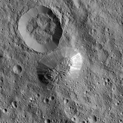

Ceres
Ceres is the biggest of the asteroids in the asteroid belt and is the only dwarf planet in the belt.
It is named after the Roman goddess of agriculture and fertility.
It was discovered in 1801 and was thought to be a planet, before other smaller bodies like Pallas, Juno, and Vesta were discovered.
The surface of the asteroid consists of ice and carbonates.
Cryovolcanic activity shapes the surface of the dwarf planet, thanks to which many bright spots in craters and a single cryovolcanic mountain (Ahuna Mons) exist.
It has been visited by the Dawn probe, which has also explored the second biggest asteroid, Vesta.
Ceres is named after the goddess of fertility in Roman mythology, as it is the tradition for other planets.
Franz Xaver von Zach and Johann Elert Bode refered to the planet as Hera and Juno, the Greek and Roman queen of the gods respectively.
For a while, this name stuck in Germanic-speaking states, though astronomer Karl Harding discovered another asteroid, now bearing the name Juno, and the name the discoverer Giuseppe Piazzi chose stuck
In 1596, Johannes Kepler assumed that there must be a planet between Mars and Jupiter, due to the gap between the planets.
He stated that it was "God's design" for the distance between planets to follow a mathematical progression.
Based on this observation, Johann Daniel Titius and later Johann Elert Bode in 1772 derived the Titius-Bode law, which was an attempt to predict the location of new planets.
It yielded a result in 1781, when William Herschel discovered Uranus beyond the orbit of Saturn.
Later, Franz Xaver von Zach and 24 more astronomers organized the United Astronomical Society (dubbed the "celestial police"), originally tasked with compiling more precise star catalogues, but later began an organized search for the mysterious planet.
Three years after their first congress, in 1801, Giuseppe Piazzi discovered Ceres at the observatory in Palermo.
After other members of the "celestial police" discovered other "planets" like Pallas, Juno, and Vesta, they started to suspect that Ceres was not a planet, but a part of a new class of objects.
Herschel suggested the term "asteroid" (star-like), since their apparent sizes were smaller than those of stars.
Titius-Bode law was later disproven by the discovery of Neptune.
In 2006, the IAU passed a resolution, which created an official definition for planets, and introduced a new category - dwarf planets.
Along with Pluto and the newly-discovered Eris, the main reasons for this decision, Ceres was also put into the dwarf planet class, because at the time distant observations were able to determine that it is round.
Orbit and rotation
Ceres orbits around the Sun for 4.6 Earth years.
It is roughly in the middle of the asteroid belt at 2.77 AU from the Sun.
The inclination is 10.6°, greater than that of Mercury, but less than Pluto.
The eccentricity is 0.08.
The rotational period of Ceres is 9 hours and 4 minutes, much faster than the four terrestrial planets.
It has a axial tilt of 4°, meaning little seasonal variations in sunlight by latitude.
Still, it casuses the poles to hold more ice, since there is no direct sunlight, similar to the rocky Mercury and Moon.
Ceres is an oblate spheroid, with an equatorial diameter 8% larger than its polar diameter.
Measurements from the Dawn spacecraft found a mean diameter of 939.4 km.
Out of the dwarf planets recognized by IAU, it is the smallest.
Occator crater. The two bright spots in the middle and on the side are Cerealia and Vinalia Faculae. The spots contain salt evaporates.
The interior of Ceres consists of water ice, hydrated silicate minerals, mostly clay, and some salts like sodium carbonate and hydrated magnesium sulphate.
It is most definitely differentiated, but exact structure is uncertain, as the Dawn mission has generated three possible models.
In the three-layer model, Ceres is thought to consist of a 40 km thick ice, salts and hydrated minerals crust, and an inner muddy "mantle" of hydrated rock, such as clays, separated by a 60 km layer of a muddy mixture of brine and rock.
The two other models suggest a core of either chondrules, or volatiles, and a mantle of either ice and mud, or hydrated silicates (like clay) that is denser than the core.
In any of the cases, Ceres has an active geology and briny water exists in the interior, creating cryovolcanic features on the surface, making it the closest object to the Sun to exhibit this process.
Ceres resembles many geologically inactive planetary bodies.
The surface is almost exclusively marked by impact craters of different size.
The largest crater on the surface is the Kerwan basin at 284 km in diameter.
Despite its old, cratered surface, there are some notable features that suggest geological activity and cryovolcanism.
One of them is the Occator crater, which has two bright spots.
The spots are named Cerealia and Vinalia Faculae,in the center and near the edge of Occator respectively.
It is suggested that the bright spots contain salts from the evaporated brine that was exposed from cryovolcanic processes.
Several other bright spots exist like Haulani Facula and Oxo crater.
Oxo is bright because of ice that was brought externally and is in the process of sublimating.

Ahuna Mons, a cryovolcano and the tallest mountain on Ceres. North of it lies an unnamed crater.
The other notable cryovolcanic feature is Ahuna Mons, the only mountain on Ceres to show such activity.
It is the tallest mountain on Ceres at around 4100 m.
The mountain is marked by bright streaks, similar to the faculae of Occator crater in composition.
It is antipodal to the Kerwan basin, which could have created the volcanic dome.
There are other mountains on Ceres, most notably Liberalia and Yamor Montes, which might have been cryovolcanoes in the past.
There are also several smaller hills like Kwanza Tholus and Aymuray Tholi, both forming a chain.
There are several other features, including Samhain Catenae, which are potential tectonic fault lines.
Ceres has been observed from Earth before it was visited by a spacecraft.
Hubble imagery was able to differentiate its round shape and numerous albedo features.
NASA's Dawn was the first to visit Ceres and Vesta, the two biggest asteroids.
During its Ceres orbiting phase, Dawn gathered data about its composition, surface, and cryovolcanism.
Both the ESA and CNSA (China) are considering sample return missions to the Occator crater.
External links